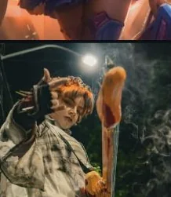
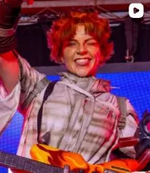
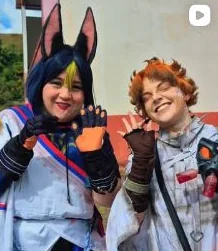

PROJETO CONCLUÍDO · HEXATOMBE

Do desenho à última peça. Um espaço para reunir personagens, experimentos, bastidores e a história por trás de cada criação.
Franco de Hexatombe e Caitlyn de Arcane são projetos concluídos que a Sakurai deseja apresentar. A galeria reúne registros do perfil fornecido.


Palco, maquiagem, construção e encontros.
Imagens de prévia tratadas e ampliadas a partir dos prints enviados. A qualidade fotográfica original requer os arquivos de alta resolução. Materiais de referência não são apresentados como artes autorais.
Ideias que a Sakurai mencionou para o futuro. Abaixo são apenas cartões de planejamento — ainda sem imagens ou atualizações oficiais.
Espaço reservado para referências, desenhos e futuros registros de construção.
Conceito de projeto; fotos e etapas só serão adicionadas quando existirem.
Um diário visual para publicar pequenas atualizações e tutoriais das peças. As entradas abaixo mostram o formato proposto, sem inventar instruções da artista.
Um espaço para fotos de cada fase, produtos utilizados, notas e pequenos tutoriais autorais.
 EXEMPLO DE PUBLICAÇÃO
EXEMPLO DE PUBLICAÇÃOUma página para explicar materiais, montagem e escolhas de acabamento.
Atualizações curtas com imagens, progresso e aprendizados — mesmo antes da peça ficar pronta.
Uma estante para guardar referências próprias e de outros artistas, moldes, inspirações e links úteis — sempre com autoria e fonte quando houver.
Paletas, silhuetas, figurinos e inspirações salvas com link para a fonte.
Organização de moldes próprios ou referências creditadas quando disponíveis.
Passo a passo, testes e aprendizados que a artista quiser publicar.
Espaço conceitual para buildbooks e objetos de coleção mencionados pela Sakurai. São ideias de apresentação, não produtos à venda.
Um livro visual com referências, fotos, materiais e etapas de cada cosplay.
Conceito de seçãoCartões colecionáveis com fotos dos personagens e das apresentações.
Ideia para o futuroUma vitrine possível para pôsteres autografados e itens autorais.
Sem vendas nesta demo EXPRESSÃO · CONSTRUÇÃO · CENA
EXPRESSÃO · CONSTRUÇÃO · CENASakurai é cosplayer e cosmaker. Seus trabalhos atravessam interpretação, figurino, maquiagem, detalhes e performance.
Este site conceitual foi pensado para mostrar não apenas o resultado final, mas a história da construção, os projetos futuros e tudo que alimenta seu processo criativo.
Acompanhar no Instagram ↗Para acompanhar criações e conversar sobre colaborações artísticas. Esta página não recebe pedidos de encomenda.